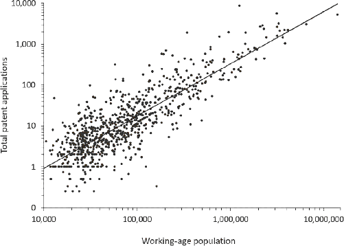
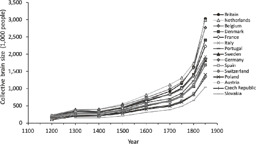
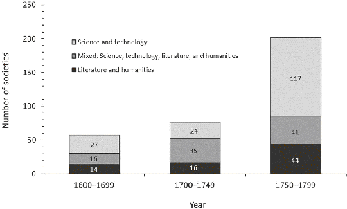
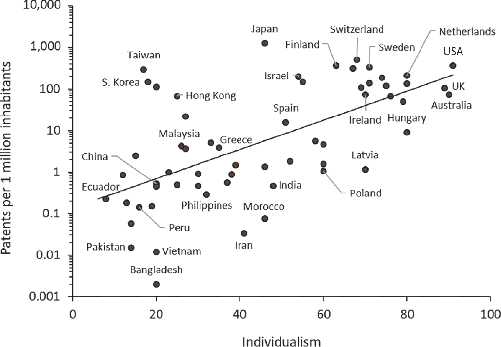

Recall my space aliens from Chapter 1 who were surveying the earth from their orbital perch around 1000 CE. Or consider the earthly view from Toledo, Spain, through the eyes of the Muslim scholar Said ibn Ahmad in 1068. Said divided the world into two main groups: those who had contributed to science and learning—the “civilized”—and the “barbarians” who had not. For Said, civilized peoples included Indians, Jews, Egyptians, Persians, Greeks, and Romans (by which he meant Byzantines). He subdivided the barbarians into an upper crust, including the Chinese and the Turks (impressive fighters), and the rest, consisting of the “black barbarians” to the south (sub-Saharan Africans) and the “white barbarians” to the north (Europeans). Crystallizing a widely shared view among Muslim scholars of the era, Said evaluated the English and Dutch of the 11th century as follows:
The other peoples of this group who have not cultivated the sciences are more like beasts than like men. For those of them who live furthest to the north, between the last of the seven climates and the limits of the inhabited world, the excessive distance of the sun in relation to the zenith line makes the air cold and the sky cloudy. Their temperaments are therefore frigid, their humors raw, their bellies gross, their color pale, their hair long and lank. Thus they lack keenness of understanding and clarity of intelligence and are overcome by ignorance and apathy, lack of discernment, and stupidity …5
Said’s northerners probably wouldn’t have impressed my alien anthropologists, either. Few would have guessed that before the new millennium was over, these barbarians, along with their cultural descendants in North America, would have conquered much of the world, lit up the earth at night, vanquished most plagues, learned to fly, split the atom, walked on the moon, built machines that learn, and begun tinkering with the informational code underlying life.
If the alien anthropologists had returned in 1500, Europe would have looked more urbanized, with many impressive cathedrals and numerous castles. In northern Italian cities like Venice, Genoa, Milan, Florence, and Bologna, the Renaissance would have been in full swing. Britain, however, wouldn’t yet have stood out as the obvious birthplace of the Industrial Revolution. Muslim observers had begun to notice that something was afoot in Europe a century or so earlier. With some astonishment, the famed historian Ibn Khaldûn remarked, in about 1377, “We have heard of late that in the lands of the Franks, that is, in the country of Rome and its dependencies on the northern shore of the Mediterranean Sea, the philosophic sciences are thriving, their works reviving, their sessions of study increasing, their assemblies comprehensive, their exponents numerous, and their students abundant.” The aliens might have also noted the passage of some modest-looking ships sailing from the Iberian Peninsula across the Atlantic Ocean and around the southern tip of Africa.6
While this would have been curious, much of the action was still elsewhere. Over in Turkey, the Ottoman Empire was expanding rapidly around the middle of the 15th century, after having crushed the last remnants of the “civilized” Byzantine Empire in Constantinople (now Istanbul). The Ottoman emperor, Suleiman the Magnificent, would soon begin expanding into Hungary, Serbia, Slovakia, and Croatia. In China, having explored the coasts of India and Africa in a fleet of majestic sailing ships that dwarfed the later vessels of Christopher Columbus and Vasco da Gama, the Ming Dynasty had restored both the Grand Canal and the Great Wall, built the Forbidden City, and assembled an immense army and vast harem.
The bottom line is that for much of the first half of the second millennium, Europe remained a relative backwater, at least as judged by the other leading powers of the era. However, as Ibn Khaldûn’s prescient puzzlement suggests, observers were beginning to notice that something was afoot among the “northern barbarians” by the middle of the millennium.
Much ink has been spilled trying to explain why the Industrial Revolution occurred at all, and, given that it did occur, why it began in Europe instead of anywhere else. During the first half of the second millennium, the leading candidates for the source of this earth-shaking economic transformation would have been China, India, and the Islamic world, not Europe. Proposed explanations for “Why Europe?” emphasize the development of representative governments, the rise of impersonal commerce, the discovery of the Americas, the availability of English coal, the length of European coastlines, the brilliance of Enlightenment thinkers, the intensity of European warfare, the price of British labor, and the development of a culture of science. I suspect that all of these factors may have played some role, even if minor in some cases; but, what’s missing is an understanding of the psychological differences that began developing in some European populations in the wake of the Church’s dissolution of Europe’s kin-based institutions. These psychological changes fostered, and were then reinforced by, the subsequent development of impersonal markets, competing voluntary associations, new religious faiths, representative governance, and science. My effort here is not so much to reject existing explanations but to lay some deeper social and psychological footings in the shifting sands that most explanations of the Industrial Revolution are built on.7
Before proceeding, let me underline a key point: none of these other explanations for the Industrial Revolution can account for the psychological variation and change I’ve documented in the last 12 chapters. So even if these other explanations are partially right, they’ve failed to notice the mastodon in the courtyard. It’s no longer tenable to continue pretending that all populations are psychologically indistinguishable or that cultural evolution doesn’t systematically modify how people think, feel, and perceive.
While there are many theories about the causes of the Industrial Revolution, there’s actually broad agreement that to explain the acceleration of economic growth since the mid-18th century, we need to explain the acceleration of technological innovation. So, whether your explanation is based on the fortuitous emergence of representative governments during the Glorious Revolution or on the high price of English labor, it must somehow cash out in rising and sustained rates of innovation after 1750 or so. To understand the origins of innovation, we need to return to our study of human nature.
As we’ve seen, the secret of our species’ success lies not in our raw intellect or reasoning powers but in our capacity to learn from those around us and then diffuse what we learned outward, through our social networks, and down to future generations. Over time, because we learn selectively from others and integrate insights from diverse individuals and populations, the process of cultural evolution can give rise to an ever-growing and -improving repertoire of tools, skills, techniques, goals, motivations, beliefs, rules, and norms. This body of cultural know-how is maintained collectively in the minds and practices of a community or network. To understand innovation, the key questions to ask are: What determines the rate of cumulative cultural evolution? What factors cause this adaptive information, including technological prowess, to accumulate more rapidly?8
Many assume that innovation—the successful diffusion and implementation of an improvement—depends mostly on invention, the creation of a single improvement by a person or team for the first time. Many also assume that inventions require the involvement of particularly smart individuals—geniuses—who have lots of free time and strong material incentives (big payoffs). These elements, of course, can play a role. But, research in cultural evolution suggests that there are two much more important factors. First, the larger the population of engaged minds, the faster the rate of cumulative cultural evolution. That is, the larger the network of people learning or doing something, the more opportunities there will be for individuals to produce improvements, whether through fortuitous inspirations, lucky mistakes, careful experiments, or some combination. Second, the greater the interconnectedness among individuals—among learners and their teachers over generations—the faster the rate of cumulative cultural evolution. Put differently, the greater the diversity of teachers, experts, and others that learners have access to, the more selective they can be in whom they learn from and what they learn. A well-connected learner can “invent” new things simply by copying skills, practices, or ideas from different experts and then recombining these, intentionally or accidentally. Innovation can emerge even in the absence of conscious invention—a process that was probably the primary driver of cumulative cultural evolution over much of our species’ evolutionary history.9
If this feels off, it’s probably because you’ve been seduced by the “myth of the heroic inventor,” as historians of technology call it. This WEIRD folk model of how innovation works exalts singular acts of invention by geniuses (it’s attractive to individualists). However, four facts drawn from the history of technological development undermine it. First, complex innovations almost always arise from the accumulation of small additions or modifications, so even the most important contributors make only incremental additions. This is why so many blockbuster innovations were developed independently by multiple people at the same time—the key ideas were already out there, scattered among the minds of others, and someone was going to put them together eventually.10 Second, most innovations are really just novel recombinations of existing ideas, techniques, or approaches; a tool is taken from one domain and applied in another. Third, lucky mistakes, fortunate misunderstandings, and serendipitous insights play a central role in invention and often represent the only difference between famous inventors and anonymous tinkerers. Finally, necessity is certainly not the mother of invention. Over the course of human history, people often ignored lifesaving inventions for years, sometimes only realizing how much they needed an invention long after its arrival (e.g., penicillin, nitrous oxide, the wheel). Although plagues, marauders, famines, and droughts have persistently provided humanity with plentiful existential incentives to innovate, Mother Necessity has rarely nurtured human ingenuity to create the crucial inventions. Instead, people have mostly suffered, died, or fled instead of inventing their way out of crises.11
To illustrate these points, consider five important innovations:
My point is that innovation is driven by the recombination of ideas, insights, and technologies, along with a healthy dose of serendipity and unintended consequences. As a result, any institutions, norms, beliefs, or psychological inclinations that increase the flow of ideas among diverse minds or open up more opportunities for fortune to show us the way will energize innovation.
Of course, getting the ideas to meet is one thing, but in the case of technology, an inventor has to physically make it. Since no one has all the skills or know-how to do everything that goes into any complex invention, we need to think about the division of labor, or what should be thought of as a society’s division of information. As most societies scaled up over human history and the pool of cultural knowledge expanded, different groups began to specialize in certain skills, creating experts like blacksmiths, sandal makers, weavers, farmers, and warriors. Blacksmiths could exchange their plows and horseshoes for sandals, rope, wheat, and protection. In this world, with a complex division of labor, cumulative cultural evolution and innovation still depend on the size and interconnectedness of populations, but now people with different skills, knowledge, and expertise need to be able to find each other, develop trust, and then work together. Illustrating this for steam power, James Watt famously wrote to his partner John Roebuck that “my principal hindrance in erecting engines is always smith-work.” Watt depended on the skills and expertise of several skilled artisans, including ironmasters like John Wilkinson, whose technique for boring cannon barrels proved essential to making the cylinders used in Watt’s engines.17
The upshot is that cumulative cultural evolution—including innovation—is fundamentally a social and cultural process that turns societies into collective brains. Human societies vary in their innovativeness due in large part to the differences in the fluidity with which information diffuses through a population of engaged minds and across generations as well as to how willing individuals are to try novel practices or adopt new beliefs, concepts, and tools.18
Now, applying our understanding of the collective brain to Europe over the last millennium, the social and psychological changes I’ve highlighted can account for not only the dramatic, innovation-driven acceleration in economic growth that began in the latter half of the 18th century (Figure 13.1) but also the more moderate patterns of economic expansion prior to industrialization. In Chapter 9, we saw that urbanization—a proxy for economic prosperity—had been climbing in much of western Europe since 900 CE. Consistent with this, historical data show that both Holland and England had experienced a long-term rise in income since at least the 13th and 16th centuries, respectively. Thus, while the Industrial Revolution does indeed mark a striking acceleration, it was in fact part of a long-term trend that stretches back many centuries.19
Much of the economic growth prior to the 17th century probably derived from expanding commerce and trade—the “Commercial Revolution” of the 13th century—which was anchored in rising levels of impersonal trust, fairness, and honesty that developed along with market norms and competition among voluntary associations. However, some of this early growth also arose from innovation, including many technological developments. Early in the Middle Ages, agricultural production was gradually improved by the water mill (sixth century, Roman origin), heavy plow (seventh century, Slavic origin), crop rotation (eighth century), and both the horseshoe and the harness (ninth century, probably from China). Water mills were deployed to mechanize the production of beer (861, northwest France), hemp (990, southeast France), cloth (962, northern Italy; Switzerland), iron (probably 1025, southern Germany), oil (1100, southeast France), mustard (1250, southeast France), poppies (1251, northwest France), paper (1276, northern Italy), and steel (1384, Belgium). In the Late Middle Ages, as we’ve seen, both the mechanical clock and the printing press diffused widely and generated economic growth in the cities that adopted them early. The social and psychological shifts I’ve described help explain why Europeans developed an openness to new ideas, technologies, and practices from anywhere and everywhere. The more ideas they absorbed, the more recombinations emerged and the faster innovation chugged along.20
Why were these populations becoming so innovative?21
The growth of Europe’s collective brain was nourished by the coevolution of the psychological changes and institutional developments that I’ve documented throughout this book. Psychological developments such as greater impersonal trust, less conformity, broader literacy, and greater independence would have opened the flow of ideas, beliefs, values, and practices among individuals and communities within Europe. At the same time, the proliferation of voluntary associations and rising urbanization, especially the growth of free cities, would have expanded the collective brain by bringing diverse individuals together and aligning their interests. In fact, four voluntary associations—charter cities, monasteries, apprenticeships, and universities—all contributed to broadening the flow of knowledge and technology around Europe. At an individual level, people’s desire to come up with new ideas and improved techniques—to uniquely distinguish themselves—would have interacted synergistically with rising levels of patience, time thrift, analytic thinking, overconfidence, and positive-sum thinking (optimism). When viewed in the context of these social, psychological, and institutional changes, which accumulated gradually over a millennium, Europe’s technological and economic acceleration seems a lot less puzzling.22
Our story begins with the Church’s demolition of Europe’s intensive kin-based institutions. Breaking kin-groups down into nuclear families would have had complex effects on the collective brain. Young learners in isolated nuclear families are stuck learning from Mom and Dad for lots of important skills, abilities, motivations, and techniques—anything that requires close contact, extended observation, or patient instruction. By contrast, kin-based institutions like clans or kindreds provide a richer set of teachers and more opportunities for learning. An aspiring teenage weaver in a clan, for example, could potentially learn weaving techniques from her cousins, great-aunts, and father’s brothers’ wives, as well as from her mother. Of course, since intensive kin-groups foster greater conformity and obedience, her more experienced relatives might not be particularly open to new techniques or novel recombinations, especially radical ones. Consequently, learners won’t be as inclined to seek out novelty or violate tradition in order to highlight their uniqueness or individuality.
Nevertheless, while large kin-groups beat nuclear families in size and interconnectedness by tying more people together, nuclear families have the potential to be part of even larger collective brains if they can build broad-ranging relationships or join voluntary groups that connect them with a sprawling network of experts. Moreover, unconstrained by the bonds of kinship, learners can potentially select particularly knowledgeable or skilled teachers from this broader network. To see why this is important, consider the difference between learning a crop rotation strategy from the best person in your extended family (a paternal uncle, say) or the best person in your town (the rich farmer with the big house). Your uncle probably had access to the same agricultural know-how as your father, though perhaps he was more attentive than your father or incorporated a few insights of his own. By contrast, the most successful farmer in the community may very well have cultural know-how that your father’s family never acquired, and you may be able to combine insights from him with those from your own family to produce an even better set of routines or practices.23
To see the power of interconnectedness, consider a simple experiment that Michael Muthukrishna and I did with 100 undergraduates. We created “transmission chains” in which successive groups of participants individually faced a challenging task over 10 rounds, or “generations.” In the first generation, naïve participants entered the laboratory and were given the task but no instructions: against the clock, they had to figure out how to use a notoriously difficult image-editing program to reproduce a complex geometrical figure. When their time expired, each participant was asked to write down any instructions or tips for those in the next generation—their “students.” Crucially, participants were randomly split into two treatments, one in which they received instructions from only one person in the prior generation (the one-to-one treatment) and another in which they could look at the instructions of up to five individuals from the prior generation (the five-to-one treatment). The one-to-one treatment creates a single cultural lineage—like parent-to-child transmission in a nuclear family—while the five-to-one treatment allows information to spread broadly through each generation, like a voluntary association. After the first generation, each new group of participants received the original target image, the image or images produced by their model(s) in the prior generation, and the appropriate tips and instructions.24
The results are stark. Over 10 generations, the average performance of individuals in the five-to-one treatment improved dramatically, going from an average score of just over 20 percent in generation 1 to over 85 percent in generation 10 (100 percent would be a perfect replication of the target). By contrast, those in the one-to-one treatment showed no systematic improvement over the generations. In generation 10, the least skilled person in the five-to-one group was superior to the most skilled person in the one-to-one treatment.
Michael and I also wondered if participants in the five-to-one treatment simply picked the best teacher in the prior generation and copied them, or if they picked up tips and techniques from multiple teachers. Our detailed analysis shows that, although participants were most influenced by the most skilled among their models, learners picked up stuff from almost all of their teachers. On average, the only teacher that students entirely ignored was the least skilled. By combining techniques and insights from multiple teachers, participants came up with what amounted to “new inventions” that arose by recombining elements learned from different teachers.
If a traveler suddenly arrived on the scene and met the people in generation 10 in both the one-to-one and five-to-one treatments, he might infer that those in the five-to-one treatment were smarter than those in the one-to-one treatment. Of course, the differences in our experiment arose from the differences in the social network structure that we imposed, and in how that structure influenced each group’s interconnectedness across generations, not from differences in individual intelligence. But, those in the five-to-one treatment still looked smarter.25
Historically, this is important, because going well back into the Middle Ages, we see that one of the unusual features of social and economic life among Europeans was the employment of nonrelatives (and nonslaves) as household servants and farmhands (Chapter 5). For a few years, before getting married or setting out on one’s own, many tweens, teenagers, and young adults were farmed out to other households, often to richer and more successful households, as helpers. Such “life-cycle servants” are peculiar to Europe after the dissolution of intensive kinship.26
This custom meant that young people frequently received opportunities to see how richer and more successful households operated, just before setting off on their own. When newly married couples set up their own households—which they often did because the Church promoted neolocal residence—they could put into practice any tips, techniques, preferences, or motivations they had picked up during their time in this second household. These culturally-transmitted tidbits could have included anything from the use of crop rotation and horse collars to family planning or the centrality of self-restraint in household disputes.
The need for newly married couples to set up their own independent households may also have encouraged experimentation. Within their respective domains (plowing, cooking, sewing, etc.), men and women became their own bosses at younger ages. Instead of waiting until their grandfathers, fathers, and older brothers all died before they took charge, men found themselves at the head of their own small household in their mid-20s (on average). Younger people are less risk-averse and less tied to tradition, so any institutions that favor putting younger people in charge will be more dynamic. This would have sped up experimentation and innovation.27
Beyond the organization of households and farms, the spread of monasteries, apprenticeships (often regulated by guilds), urban centers, universities, and impersonal markets all played a role in accelerating innovation in artisanal skills, technical know-how, and the industrial arts. The earliest effects probably arose when monasteries developed into transnational franchises and diffused into every corner of Christendom (Figure 10.5). Monasteries carried with them the latest crops, agricultural techniques, production methods, and industries. They introduced techniques for beer brewing, beekeeping, and cattle breeding into widely disparate regions. Monks, for example, developed salmon fisheries in Ireland, cheese-making in Parma, and irrigation in Lombardy.
The Cistercian Order, in particular, built a sprawling network of monastery-factories that deployed the latest techniques for grinding wheat, casting iron, tanning hides, fulling cloth, and cultivating grapes. Most Cistercian monasteries had a water mill, and some had four or five such mills for different jobs. In France’s Champagne region, for example, the Cistercians were the leading iron producers from roughly 1250 to 1700. The motherhouse in Burgundy planted vineyards, which produced one of the world’s most famous vintages, and houses in Germany devised ways to cultivate vines on terraced hillsides. At mandatory annual meetings, hundreds of Cistercian abbots shared their best technical, industrial, and agricultural practices with the entire order. This essentially threaded Europe’s collective brain with Cistercian nerves, pulsing the latest technical advances out to even the most remote monasteries (mapped in Figure 11.2). With their strict devotion to an austere life, monks freely dispensed their know-how, strategies, and skills to local communities.28
Meanwhile, in the growing urban centers of the Middle Ages, apprenticeship institutions emerged that opened the door to residentially-mobile artisans and craftsmen. Unlike other societies, these more impersonal institutions became the central foci for the transmission of technical skills and craft know-how across generations. The most skilled masters attracted numerous apprentices, and these apprentices paid for their training in various ways, including through direct payments to their masters and via their labor during extended internships. Guilds sometimes regulated this process, usually aiming to ensure that both masters and apprentices lived up to their obligations under guild rules.29
Unsurprisingly, masters often wanted to train their own sons or other relatives instead of strangers. However, compared to the strongly lineal transmission of similar know-how in places like China and India, European masters seeded their skills much more broadly across the population, thereby fueling more recombination and faster cumulative cultural evolution. Hard data are not plentiful, but one database of medieval guilds from the Netherlands shows that four out of five apprentices were not sons of their master. Later, in 17th-century London, the percentage of artisans trained by nonrelatives ranged from 72 to 93 percent. By contrast, in India and China, the rates were likely flipped, with almost all skilled artisans having been trained by a relative or close family tie. Even today in China, new workers and non-kin are prevented from learning the most important craft skills; proprietary techniques remain confined to particular lineages.30
Besides permitting apprentices from diverse families to access the top masters (as in the five-to-one experimental treatment above), these institutions would have spurred rapid innovation in several other ways. First, an extended period of training developed between apprentice and master: the journeyman stage. After completing an apprenticeship, a newly minted journeyman, as the name implies, relocated to work at another shop under a different master, often in another town or city. This allowed recently trained individuals to observe how another expert did things. In addition, at the shops of respected masters, several journeymen from different cities and shops often came together. This meant the knowledge of multiple masters could be pooled, recombined, and honed by a team of journeymen and apprentices. Drawing on this diversity, journeymen who became masters could develop their own signature approaches, which they would have wanted to do because they were individualists who sought to impress others with their uniqueness. As noted, Gutenberg may have gotten the idea of movable type from a former traveling apprentice.31
Second, because cities and guilds were engaged in intergroup competition, highly skilled masters were a hot commodity and could be recruited to move their shops between cities. Unlike in most places and times, people weren’t bound by intensive kin ties and obligations to particular locales, so many masters did move. By 1742 in Vienna, for example, more than three-quarters of the 4,000 masters had been born elsewhere. They came from the entirety of the German-speaking world but primarily from a core region that ran from the Danube to the Upper Rhine. In England, which had greater mobility than anywhere else, lads flocked to London from around Europe for apprenticeships, including one James Watt, who apprenticed there as an instrument maker. Third, being independent and mobile, artisans of all kinds tended to cluster in towns and cities, and often on the same street and block. This would have created competition, incentivized improvements, and produced more opportunities to learn from each other. By contrast, in China, where craft techniques and skills were transmitted within clans, artisans remained dispersed and rooted in their rural homelands.32
Of course, countries, cities, and even skilled masters wanted to keep valuable know-how secret. Narrow self-interest favors secrecy, while the collective brain thrives on openness and the flow of information. Unlike other societies, however, Europe’s family structure, residential mobility, intergroup competition, and impersonal markets pushed hard against secrecy. Masters were continually poached by ambitious cities, and journeymen sought out the best opportunities. Laws to stymie information flow were unpopular and difficult to enforce, allowing industrial espionage to flourish. Some guilds even began to develop explicit norms about the sharing of know-how within the guild. For example, master shipbuilders in Holland exchanged their secrets and insights at mandatory annual meetings. This sharing was probably motivated by a combination of prizes for excellence—giving the clever prestige—and informal punishments for the stingy, if they refused to share.33
BIGGER CITIES, BETTER BRAINS
The more numerous and the more abundant the civilization (population) in a city, the more luxurious is the life of its inhabitants in comparison with that (of the inhabitants) of a lesser city.
—The Muslim historian, Ibn Khaldûn, The Muqaddimah (1377, Chapter 4)
At a larger scale, the proliferation and growth of cities and towns expanded Europe’s collective brain. On the eve of the first millennium, rural folk began flowing into urban centers in several regions of Europe, especially in a band running from northern Italy through Switzerland and Germany into the Low Countries and eventually to London. City incorporations proliferated, and the number of people living in cities of over 10,000 rose 20-fold, from about 700,000 in 800 CE to nearly 16 million people in 1800. During the same millennium, the urban population in the Islamic world didn’t even double and China’s remained flat.34
Urban centers, and especially urban clusters, expand the collective brain by bringing people, ideas, and technologies together. The mass action of cities, particularly when propelled by individualists seeking out mutually beneficial relationships, creates innovations as ideas meet, recombine, and make baby ideas. Cities also allow people with different skills and areas of expertise to encounter one another, discover complementary interests, and collaborate. Suppose I’m James Watt and my new design for a steam engine demands a precision-bored cylinder. I’d best live in a place where I can both find out that such precision work is possible and also actually be able to locate someone to do the job. The bigger and more fluid the city or urban cluster, the better.35
To illustrate the power of the metropolis, Figure 13.2 plots the size of the working-age population in contemporary U.S. cities against their annual innovation rates, captured here using the total number of patent applications in 2002. Knowing the population of a city allows us to explain 70 percent of the variation among U.S. cities in innovation. The size of this relationship, which I’ve plotted on log scales, tells us that cities have synergy. For each 10-fold increase in population size (e.g., from 10,000 to 100,000 people), there’s 13 times more innovation. If all cities did was concentrate individuals, we’d expect a 10-fold increase in population size to create a proportional increase in inventions. Instead, we get a 13-fold increase. Here, I’ve used patent applications for 2002, but the same strong relationship holds back to 1975, where our dataset runs out.36
The data come from the contemporary United States, so you might worry that this relationship didn’t hold in the past. However, analyses of preindustrial innovation rates in England also show that larger populations and denser urban areas dominated innovation and technical improvement, including in patent data. In fact, the synergistic effects of cities were probably even stronger in the era before airplanes, telephones, and the internet.38

Urban areas of Christendom were growing and becoming more interconnected. One way to capture this is to imagine how many other minds a person in a city could—in principle—access in order to learn from or collaborate with. To get at this, we assume each person can access everyone in their own city, and then we weight the populations of other cities by the cost of traveling to them. So, if you live in a populous city that is tightly connected to surrounding cities by cheap transportation, you are part of a larger collective brain—even if you yourself don’t travel. We can then average this for each modern European country each century. Figure 13.3 shows the change in urban interconnectedness from 1200 to 1850. The first thing to notice is that, except for a decline in the wake of the Black Death in the 14th century, urban interconnectedness has been rising throughout Europe since 1200. However, interconnectedness rose faster in some regions than in others. In particular, the Netherlands accelerated early, around 1400, and Britain accelerated dramatically after about 1600.

The impact of Europe’s expanding collective brain manifested in rising economic productivity. For instance, by the 12th century Europeans had developed the spinning wheel for making woolen clothing. This invention, which represents the first known application of belt-driven power, doubled or even tripled the productivity of wool spinners. Later, under the guilds, weaving efficiency increased by 300 percent between about 1300 and 1600 in the high-quality woolen industry. In the manufacture of gilded books, productivity increased by 750 percent during the 16th century. In London, the price of watches dropped by about 75 percent between 1685 and 1810, suggesting substantial improvements in manufacturing efficiency. Of course, some of these productivity gains were probably due to individuals working longer and harder (Chapter 11), but numerous specific inventions and technological modifications point to an important role for innovation.40
The point I’m making is that the dissolution of intensive kinship not only spurred urbanization in Europe but altered the psychology of these new urbanites in ways that distinguished them from other populations around the world. Greater individualism, impersonal trust, and relational mobility meant that individuals were more likely to seek out and develop relationships with people who were not tied into their social networks. Impersonal norms about fairness, honesty, and cooperation provided a framework for such interactions, and formal contracts poured the concrete to backstop agreements of all kinds. All of these psychological and social changes would have increased the interconnectedness of populations and fueled greater innovation. So far, we’ve considered the innovation-inducing impacts of monasteries, apprenticeships, and cities. Let’s move on to two other voluntary associations: universities and knowledge societies.
Universities, which, as we’ve seen, began spreading at the end of the 12th century, also helped innervate Europe’s collective brain. Although they didn’t have a big influence on technical training or engineering until late in our story, universities contributed to innovation by facilitating the circulation of educated individuals and books around Europe while also encouraging the speedy adoption of mechanical clocks and printing presses. Universities created a class of highly literate and mobile intellectuals and professionals who accepted positions as lawyers, doctors, administrators, professors, and notaries in urban communities throughout Christendom. They also provided homes and some autonomy for intellectuals of many stripes—including Isaac Newton and Daniel Bernoulli—which created competition among the growing number of wealthy aristocrats who, after their own university education, wanted to surround themselves with leading thinkers and eventually scientists.41
By the 16th century, a mobile community of individualistic and analytically-oriented thinkers had begun to form a loose web called the Republic of Letters that networked much of western and central Europe. Members of this virtual community sent one another handwritten letters often carried on the wings of commerce or by postal services, which were both public and private. Intellectuals penned letters about their ideas to friends and colleagues as well as to other correspondents around Europe. Upon reaching key nodes, important communications were often translated (if necessary), hand-copied, and sent out to other network members in a kind of starburst pattern. This not only linked thinkers in France, Britain, Holland, Germany, and northern Italy but also networked far-flung intellectuals like the mathematician Marino Ghetaldi in Croatia, who constructed the first parabolic mirror, and Jan Brożek in Krakow, who showed mathematically that the hexagonal honeycombs used by bees represent the most efficient solution to storing honey. Both scientists had spent time at a nodal university (Padua) at the core of the Republic, and Ghetaldi became pen pals with Galileo. Crucially, these axonal connections defied political boundaries: British intellectuals, for example, continued to interact with their Dutch counterparts through three wars, and French thinkers learned about Newton’s contributions in his Principia (1687) despite incessant wars between Britain and France throughout this era.42
At the same time, while the Republic continued to communicate via handwritten letters, the quartet of the printing press, the paper mill, literacy, and Protestantism was supporting a symphony of books, pamphlets, technical manuals, magazines, and eventually both scholarly journals and public libraries that further networked the collective brain.43
At local and regional levels, the Republic seeded and nurtured a variety of philosophical and scientific associations across Europe. These knowledge societies met periodically, often at salons or in coffeehouses, to discuss the latest developments in politics, science, philosophy, and technology. Many societies had small libraries and most held lectures, either monthly or quarterly. These voluntary associations were crucial because they connected local intellectuals with a broader class of engineers, entrepreneurs, artisans, and tinkerers. The Birmingham Lunar Society, for example, fostered interactions between scientists like Benjamin Franklin and Joseph Black (who discovered latent heat), mechanics like James Watt and John Whitehurst (hydraulics), and entrepreneurs like Matthew Boulton and John Roebuck. If you’re an inventor like James Watt, trying to troubleshoot a broken Newcomen steam engine owned by the University of Glasgow, it’s nice to be able to chat with Joseph Black about thermodynamics and then access Boulton’s staff of smiths and artisans. Illustrating the proliferation of knowledge societies from 1600 to 1800, Figure 13.4 shows that the number of knowledge societies, and specifically those focused on science and technology, grew especially rapidly after 1750.44
Making the case for the importance of the Republic of Letters and these proliferating knowledge societies, the renowned economic historian Joel Mokyr notes how communities evolved a set of social norms about freely sharing knowledge. The origins of these norms are best understood in light of the increasingly WEIRD psychology that had been evolving across Europe. Because the main focus of these voluntary associations was to share new ideas and findings, the prestige of members was derived from their contributions of original insights or new discoveries. There were reputational incentives for members to get their new ideas “out there” as soon as possible, so they could be recorded and credited in the minds of others. Norms also required members to respond to critics within the community, where contributions were judged by peers—acknowledged experts whose authority derived from their own contributions. This led to the development of norms that praised the public sharing of knowledge and sanctioned those who kept secrets, fabricated evidence, or stole ideas from others.46

Along with knowledge sharing, new epistemic norms were also developing. Epistemic norms set cultural standards for what counts as “good” evidence and a “sound” argument. Although research on this question is limited, some work suggests that epistemic norms vary in important ways across societies and through history. For example, in many populations, even today, the experience that one has during a dream can “count” as evidence and provide justifications for one’s actions. A mother who treats her child with a broth made from the seeds of a plant that she dreamed about can be judged as having acted wisely, as long as the child gets better. Elsewhere, as in many WEIRD populations, that mother would be judged poorly no matter how the child fared. Similarly, populations vary in the weight they give ancient sages and the advice of elders. Most complex societies have weighted ancient sages quite heavily. In Europe, however, as it slowly dawned on folks like Copernicus that the ancients had been wrong about many aspects of the natural world, from medicine to astronomy, it mattered less and less whether one’s new findings or latest proposals confirmed or denied the views of the sages. Individuals and groups who relied on better epistemic standards—which themselves were debated—got the answer right more frequently, and the competition for prestige in this social world drove the honing of these epistemic norms.
The norms of knowledge societies evolved into the institution of WEIRD science. During the mid-17th century, for example, an informal association of physicians and natural philosophers (i.e., scientists) had been meeting around London. In 1660, this “invisible college” was formalized into the Royal Society by an official charter from King Charles II, making it the first national scientific association. A few years later, the group started publishing the world’s second scientific journal, the Philosophical Transactions of the Royal Society, a publication that’s alive and well today. At its inception, the journal conducted peer reviews of submitted articles and carefully date-stamped submissions to ensure priority for new contributions.47
Recent analyses confirm that knowledge societies did indeed spur innovation both before and during the Industrial Revolution. Using British patent data from 1752 to 1852, the economist James Dowey shows that the larger the number of knowledge societies in a region at the beginning of a decade, the more patents people in that area received in the ensuing 10 years. This holds even if you only compare the same region with itself in different decades or if you only compare different regions but keep the decade constant. It also holds if you only look at patents that had big impacts—i.e., those that fed into later innovations. The effects of these knowledge societies on innovation were over and above those created by rising urbanization, population density, literacy, and the stock of existing knowledge—all of which also contributed to higher innovation rates.48
The problem with this analysis is that patents might be a bad measure of innovation, especially during this early epoch, since we know that many famous inventors never patented their inventions. To address the problem, Dowey looked at the innovations featured at the first world’s fair, the Great Exhibition in London in 1851. From British inventors, roughly 6,400 innovations were selected for exhibition from roughly 8,200 entries. Of those 6,400 exhibitions, about 30 percent received prizes based on their utility and novelty. Analyses of both the exhibits selected and the prizewinners show the centrality of Britain’s knowledge societies. The greater the number of society members in a region, the more exhibitions from that region appeared at the fair, and the more likely those exhibitions were to win prizes. Specifically, for every 750 additional society members in a region, the number of exhibits and prizes from a region increased by nearly 50 percent.49
But, why did some regions have more knowledge societies than others?
Recall that once Protestantism broke the Church’s monopoly in the 16th century, a variety of religious faiths sprouted and began competing for members. Although most Protestant faiths strongly promoted universal literacy, many remained hostile to science, innovation, and notions of progress. A few Protestant faiths, however, embraced science, technological improvement, and entrepreneurship in different ways, often as a means of doing God’s work. Dowey’s analyses suggest that several Protestant faiths, which were later grouped as Unitarians, encouraged the formation of knowledge societies. Regions infused with Unitarian congregations were nearly four times more likely to develop a knowledge society than were other regions. This meant that Unitarian regions typically developed a knowledge society nearly a half century (46 years) before regions without Unitarians. Over time, the social and economic success of these Protestant sects spurred competitive emulation by other faiths—so most people became more open to science. This suggests that, in Britain, Unitarianism fostered the creation of knowledge societies, and knowledge societies propelled innovation.50
In France, innovation can also be linked to knowledge societies, urban interconnectedness, and certain forms of Protestantism. As in England, French cities with knowledge societies before 1750 grew economically faster until at least 1850. Here, we can look deeper by using subscriptions to the Enlightenment’s most famous publication, Denis Diderot’s Encyclopédie, as a measure of urban interconnectedness. In addition to essays by leading thinkers on government, religion, and philosophy, the Encyclopédie diffused material on new technologies and the industrial arts to thousands of subscribers from the urban middle class in 118 French cities. Detailed analyses show that the more subscriptions a French city had (per capita) to the Encyclopédie, the more innovations (exhibitions) from that city appeared at the 1851 Great Exhibition, and the more that city prospered during the century after 1750. That is, cities that were more plugged into Europe’s collective brain innovated and grew more than less connected cities. The relationship between economic growth and urban interconnectedness appears both before and after the French Revolution, but not before 1750, so we aren’t seeing an association between preexisting stocks of human know-how, affluence, or infrastructure.51
Why did some French cities network themselves into Europe’s collective brain more effectively than other cities?
As with England’s Unitarians, one important factor was probably the diffusion of a brand of Calvinist Protestantism that created the widely dispersed community of Huguenots. In comparing them to French Catholics, observers around 1700 described the Huguenots as “sober,” “industrious,” and determined to learn to read, write, and do arithmetic. It was also noted that they were “active in trade” and had a “real spirit” for it. A half century later, another writer observed the Huguenots’ “frugality,” “zeal for their work,” “old-time thrift,” opposition to “luxury and idleness,” and capacity for “grasping all new ideas.” He suggested that the Huguenots’ “great fear of the judgment of God” drove them to focus on economic achievement. These observations converge with the contemporary studies of the impacts of Protestant faiths on people’s psychology that I discussed in the last chapter. Such psychological inclinations would have made the Huguenots keenly interested in the Encyclopédie.
Sure enough, French cities with more Huguenots in the 17th and 18th centuries purchased more subscriptions to the Encyclopédie and subsequently prospered economically compared to other communities, probably at least partly through greater innovation.52 But, the Huguenots faced rising levels of persecution from the French state during this same period, and tens of thousands fled to places like Britain, Denmark, Switzerland, and the Dutch Republic. Many innovators and entrepreneurs were lost to France’s competitors in the process. We encountered one of them above, Denis Papin, whose book about pressure cookers probably supplied key insights for Newcomen’s steam engine. If France hadn’t oppressed its religious minorities, the steam engine might have been invented there.53
Nevertheless, Protestant faiths like Calvinism still created competition for the Church and thus drove key changes. Responding to the Protestants’ push for education and practical knowledge, the Jesuits promoted schooling, craft skills, and scientific thinking. Many famous intellectuals of the French Enlightenment, including Voltaire, Descartes, Diderot, and Condorcet, were educated in Jesuit schools, and many Jesuit priests became important scientists.
Let’s zoom out. To illustrate the growing network connections in Europe’s collective brain, I’ve been focusing on the flow of ideas and know-how within Christendom. Crucially, however, the social and psychological changes wrought by the Church’s MFP also led Europeans to absorb ideas, practices, and products from around the world more rapidly than societies that were more respectful of ancestors, devoted to tradition, and inclined to conform. Important ideas and know-how related to gunpowder, windmills, papermaking, printing presses, shipbuilding, and navigation were acquired often via circuitous routes, from prosperous societies in China, India, and the Islamic world. During the High Middle Ages, for example, returning crusaders probably brought the idea of wind power back with them from the Middle East. But, when Europeans developed this idea, their mills were mounted horizontally, which is more efficient, instead of vertically, as in Persia. Beyond their original use in grinding grain, European communities gradually deployed windmills for a growing list of jobs, including throwing silk, extracting oil, and manufacturing gunpowder. Later, Europeans dumped their awkward roman numerals (I, II, III, etc.) for more user-friendly arabic numerals (1, 2, 3, etc.), including a symbol for zero that had originated in India. After 1500, when Europeans opened global trade routes and subjugated vast overseas empires, the products, technologies, and practices from other distant societies flooded in, further energizing science, innovation, and production: latex, quinine, fertilizer (guano), potatoes, sugar, coffee, and the cotton gin (inspired by the Indian charka), just to highlight a few. Europeans of the early modern period no doubt thought that they were superior to these other peoples, but this didn’t stop them from readily assimilating the useful ideas, crops, technologies, and practices they encountered. In many cases, the products or technologies that poured into Europe’s collective brain were rapidly modified and recombined to create new innovations.54
In closing this section, let me return to a central point: the competition among cities, states, religions, universities, and other voluntary associations helped keep Europe’s collective brain humming. Kings and other elites, in Europe and throughout history, have tended to crack down on anyone with a disruptive new idea, technique, or invention that might shake up the existing power structure. In Europe, this problem was mitigated by a combination of political disunity—there were many competing states—and the relative cultural unity nurtured by the transnational networks woven by a variety of voluntary associations, including the Church, universities, guilds, and the Republic of Letters. This combination afforded innovators, intellectuals, and skilled artisans options that their counterparts elsewhere in the world usually lacked. Rebellious minds—whether individuals or entire groups—could escape oppression by moving to another patron, university, city, country, or continent. Every time a king, guild, university, or religious community cracked down on some economically productive individuals or innovative groups, it lost in competition to its more tolerant and open counterparts. Among Britain’s North American colonies, Philadelphia prospered and grew in part because it offered a degree of religious freedom and tolerance unavailable in competing cities. This intergroup competition favored social norms, cultural beliefs, and formal institutions that promoted tolerance, impartiality, and liberty. Later, in the 19th and 20th centuries, an openness to immigrants helps explain both the overall innovativeness and rapid economic growth of the United States as well as differences among counties and states. U.S. counties that took in more immigrants—even when compelled to by circumstances—were subsequently more innovative, educated, and prosperous.55
Although the primary thrusters that accelerated innovation during the Industrial Revolution were fueled by the expanding size and interconnectedness of Europe’s collective brain, there were also changes that probably made individuals—even in isolation—more likely to invent stuff. To understand this, we need to consider both how certain proto-WEIRD psychological traits would have contributed to individual inventiveness and how the new economic and social conditions would have further bolstered these traits in an autocatalytic interaction. First, recall some of the psychological traits we’ve already discussed: patience, hard work, and analytical thinking. Following Edison’s observation that invention (or “genius”) is 1 percent inspiration and 99 percent perspiration, it seems likely that as individuals became more industrious and patient, their chances of producing a successful invention would have risen. Moreover, the ongoing shift toward greater analytical thinking may have spurred innovation in several ways, including through a greater interest in experimentation, more faith in the existence of universal laws, and stronger inclinations to classify and categorize the world in context-free ways (into, e.g., species, elements, diseases, etc.).56
Beyond these aspects of psychology, the rising inclination toward positive-sum thinking would have had important consequences for inventiveness. The idea is that people became increasingly inclined to see social and economic interactions in the world, especially with strangers, as having the potential to be win-win. This is important because, as many anthropologists (as well as David Hume, in the opening epigraph) have observed, agricultural populations tend to perceive the world as zero-sum. This means that if some individuals get more—a better harvest or a beautiful child—it comes at a cost for everyone else, which leads to envy, anger, and strong social pressures for redistribution. Individuals who see the world as zero-sum are unlikely to waste time working to improve a tool, technology, or process because they implicitly believe that any productivity gains they might achieve will be at the expense of someone else (this, of course, is sometimes the case in the short run) and others will think badly of them. In addition, since those who see the world as zero-sum tend to think that others will envy their success, they may conceal their improvements and productivity, which closes off the collective brain. This suggests that as individuals become more inclined to see the world in positive-sum terms, they become more inclined to pursue technological improvements.57
A general inclination to see the world in positive-sum terms may open the psychological door to the diffusion of beliefs about “human progress.” Historians have long argued that these cultural commitments played a role in both the Industrial and Scientific Revolutions, not to mention the Enlightenment. A belief in human progress and technological advancement, which was often grounded in religious faith, seems to have driven the work of many innovators and scientists leading up to the Industrial Revolution. Demonstrating this in an analysis of nearly 1,500 British inventors from 1547 to 1851, the economic historian Anton Howes argues that invention was spurred by the diffusion of an “improving mentality,” which was primarily transmitted from prestigious mentors to those under their tutelage. In keeping with the structure created by Europe’s unusual apprenticeship system, these spreading networks would have permitted an “improving mentality” to diffuse widely along tracks that had been greased by a general psychological inclination toward positive-sum thinking. The idea here is that notions of progress and improvement appeal more strongly to someone who views the world through a positive-sum lens.58
Catalyzing these slowly evolving psychological shifts, the improving economic and social conditions would have permitted a rising number of individuals to more effectively adapt their minds—over ontogeny—to the new institutions, norms, and values they confronted. The new conditions included improved nutrition (more calories, protein, etc.) and shrinking families, leading to less sibling competition and greater parental investment in each child. Like other species, humans seem to have genetically evolved a system that responds adaptively to early life cues that are used, in a sense, to predict how much an individual should invest in physical growth and mental skills for the long term. If life will be nasty, brutish, and short, there’s less incentive to invest. In humans, this means that young children, infants, and even fetuses seem to sense their environment (e.g., “I’m always hungry and cold”) and then apply either more or less self-control toward acquiring the locally valued attributes and skills. Specifically, greater affluence cues the young to invest more in molding their minds to fit the social norms and aspirations of their communities, including those that promote climbing the status ladder. For example, in a military aristocracy where personal honor and lineage are everything, cues of affluence would have led boys to psychologically invest in internalizing their family’s notions of honor, deepening their clan loyalty, tracking the alliances of competitors, and developing hair-trigger aggressive responses to any slights to their honor. By contrast, in the urban centers of Early Modern Europe, with their emphasis on schooling and impersonal markets, the valued psychological attributes would have involved a positive-sum worldview, greater trust in strangers, sharpened punctuality, more analytic thinking, and superior reading skills (e.g., the Huguenots). In either case, the cognitive changes associated with these adaptive responses would have made people “smarter” in the sense that they were better cognitively adapted to the culturally-constructed worlds that they needed to navigate.
Evidence from the modern world confirms that improved food availability and nutrition during gestation, infancy, and early childhood fosters the development of valued cognitive abilities and social motivations. Shocks like famines and food shortages, if they occur before about age five, inhibit the development of self-control, positive-sum thinking, and the acquisition of mental skills related to abstract problem-solving and pattern recognition. Early-life deprivations may also suppress the internalization of costly social norms, such as those related to impersonal trust and cooperation. In the modern world, this results in long-term effects that lower people’s educational attainment and income as adults.59
Historically, agricultural productivity in premodern Europe had been on the rise for centuries prior to the Industrial Revolution for both technological and psychological reasons. After 1500, however, contact with diverse populations around the world led to the sudden infusion of valuable new crops, especially from the Americas. Most notably, staples like potatoes, corn (maize), and sweet potatoes arrived, along with valuable nutritional sources like tomatoes, chili peppers, and peanuts. Europeans assimilated potatoes and corn—cornerstones of the conquered Incan and Aztec Empires, respectively—into their own food system. Analyses suggest that the potato alone accelerated the growth of European cities by at least 25 percent between 1700 and 1900. Importantly, these new crops not only improved the quantity and quality of food overall, they also helped eliminate famines in Europe. These changes to nutrition and food availability would have accelerated both the psychological changes I’ve been describing and the rates of innovation. Interestingly, improvements in the food supply and population health were precocious in England during the run-up to the Industrial Revolution.60
The effects of nutritional deficiencies or shocks on cognitive and social skills may also have been mitigated by the introduction of government-run social safety nets. When harvests fail or parents lose their jobs, children can suffer deprivations that impact their mental abilities as adults. In the wake of the Protestant Reformation, European governments began to replace the existing patchwork of social safety nets, much of it run by the Church, with their own secular safety nets. In Britain, this began in earnest under Queen Elizabeth, with the Old Poor Law of 1601. This early system, which endured until 1834, charged each parish with the obligation to care for the poor and the legal right to fund this effort through local taxes. At any given time, 5–15 percent of Britons were supported directly by the Old Poor Law. Such broader and stronger safety nets would have sharpened the population’s cognitive and social skills on average. These psychological effects, along with the greater independence from families and churches that such insurance gives individuals, help explain why stronger safety nets promote more innovation, both in preindustrial England and in the modern world.61
As malnutrition and food shortages declined, both formal schools and the social norms surrounding literacy could exert an even stronger influence on cognitive development in preindustrial Europe. As we saw in the Prelude, Protestantism drove the early diffusion of literacy and schooling across Europe and put pressure on the Church to develop its own educational options. Martin Luther put the burden for educating the youth on government, and the schools that subsequently developed in Germany became a model for other countries. In Puritan New England during the 1630s, for example, the local government opened public schools and a college (Harvard) to train ministers, most of whom would serve Unitarian congregations. However, even before formal schools opened, Puritan parents looked for ways to teach their children to read, write, and do arithmetic. Protestants also believed that girls needed schooling, which led to more educated and literate mothers. As noted in the Prelude, maternal literacy has especially large effects on child health and cognitive development.62
Taken together, there’s good reason to suspect that individuals in many preindustrial European communities were cultivating psychological traits that would have made them more inventive, which would have further fueled the collective brain.
The assembly of the innovation engine that propelled the Industrial Revolution becomes easier to see once we recognize how the psychology of premodern Europeans had been quietly evolving in the background for at least eight centuries. Of course, there are many economic and geographic factors that matter too, but if there’s a secret ingredient in the recipe for Europe’s collective brain, it’s the psychological package of individualism, analytic orientation, positive-sum thinking, and impersonal prosociality that had been simmering for centuries. The relationship between psychology and innovation can still be seen today. Using data on patents to assess innovation rates, Figure 13.5 shows that more individualistic countries are much more innovative. This relationship holds even when the influence of differences in formal schooling, latitude, legal protections, religious denominations, and the percentage of the population that is of European descent is statistically held constant, or if you only compare countries on the same continent. It also holds if you only look at high-impact innovations—patents cited by other later patents—instead of all patents. Of course, in this one analysis, we can’t be sure that the individualism complex is causally responsible for the differences in innovation seen across countries. Nevertheless, this is certainly the kind of relationship we’d expect in light of all the evidence linking WEIRD psychology to the expansion of the collective brain and greater innovativeness.64

Such data suggest that the social and psychological differences among populations—quite independent of formal institutions and governments—generate large differences in innovation rates. And, at least by the mid-18th century, innovation has been the primary driver of economic growth, prosperity, and longevity. Thus, by understanding how cultural evolution has shaped the basic institutions of family and marriage, and how this in turn drove social and psychological changes, we can more clearly illuminate the origins of the modern world, including the wealth and poverty of nations.
In sustaining rising incomes over the long haul—after 1800—the populations of Christendom had another advantage that I’ve not yet highlighted. Historically, many societies around the globe have experienced rapid bursts of economic growth, but these have been hard to sustain and even harder to accelerate. The big challenge has been that rising prosperity results in rising fertility—women have more babies. This creates what economic historians call the Malthusian Trap: human populations can expand at geometric rates (very fast), making it hard for economic growth to keep up. However, innovation-driven economic growth over the last two, or perhaps more, centuries has beaten population growth such that the average person has gotten much richer. So far, I’ve been focused on the ways that WEIRD psychology and its associated institutions contributed to innovation, but these same elements have also limited fertility.
Many of preindustrial Europe’s unusual norms related to marriage and the family would have lowered women’s fertility and reduced population growth. First, based on contemporary research, both the imposition of monogamous marriage and the ending of arranged marriages would have lowered the total number of babies a woman had in her lifetime. This happens because these norms raise the age at which women marry (shrinking the window for pregnancies) and increase their power within the marriage, both of which reduce women’s fertility. Second, the MFP favored neolocal residence and generated high rates of mobility for young people (they were no longer tied down by kin obligations). In general, anything that separates a woman from her blood or affinal relatives lowers her fertility, because she has less support in childcare and will experience less pressure from nosy relatives to get pregnant. Third, unlike other complex societies, many European women never married or had children—the Church created a way for women to escape marriage pressure by entering the sisterhood (the nunnery). Finally, formal schooling for girls—promoted by Protestantism—generally lowers fertility. This happens for several reasons, but one is simply that schooling allows women to avoid early marriage to finish their education. Now, European populations did grow in response to economic prosperity after 1500, but kin-based institutions and marriage norms constrained that expansion and shifted it into cities (via migration). In short, the demolition of kin-based institutions in Europe helped spring the Malthusian Trap by fueling innovation while simultaneously suppressing fertility.65
To close, let’s summarize this chapter on a Post-it. To explain the innovation-driven economic expansion of the last few centuries, I’ve argued that the social changes and psychological shifts sparked by the Church’s dismantling of intensive kinship opened the flow of information through an ever-broadening social network that wired together diverse minds across Christendom. In laying this out, I highlighted seven contributors to Europe’s collective brain: (1) apprenticeship institutions, (2) urbanization and impersonal markets, (3) transregional monastic orders, (4) universities, (5) the Republic of Letters, (6) knowledge societies (along with their publications like the Encyclopédie), and (7) new religious faiths that not only promoted literacy and schooling but also made industriousness, scientific insight, and pragmatic achievement sacred. These institutions and organizations, along with a set of psychological shifts that made individuals more inventive but less fecund, drove innovation while holding population growth in check, eventually generating unparalleled economic prosperity.